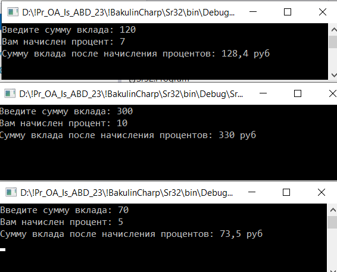
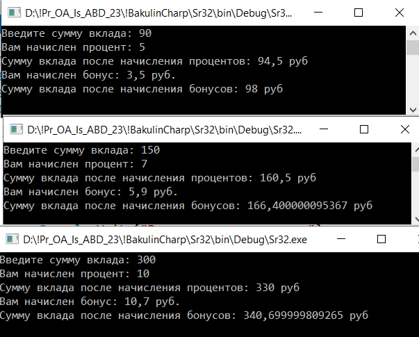

| Контрольная работа 5. Создать методы реализации алгоритма в форме подпрограммы. Решение на C# . | ||
| Назад | ||
|
Задание 1. Решить задачу построения функции. Представим банк, в котором алгоритм начисления процента по вкладу зависит от суммы вклада. На вход будет подаваться число (сумма вклада). При значении меньше 100, будет начислено 5 %, если значение находится в диапазоне от ста до двухсот — 7 %, если больше — 10 %. Отработав, программа должна вывести общую сумму с начисленными процентами.
 Задание 2. Решить задачу построения функции. Представим банк, в котором алгоритм начисления процента по вкладу зависит от суммы вклада. На вход будет подаваться число (сумма вклада). При значении меньше 100, будет начислено 5 %, если значение находится в диапазоне от ста до двухсот — 7 %, если больше — 10 %. Дополнительно банк регулярно начисляет по всем вкладам не только положенные по договору проценты, но еще и бонусы. При значении вклада меньше 100, будет начислено бонусов 3.5 руб, если значение находится в диапазоне от ста до двухсот — будет начислено бонусов 5.9 руб, если больше — 10.7 руб
 |
||
| Конспект подготовлен Бакулиным А. М. 2022 год. | ||